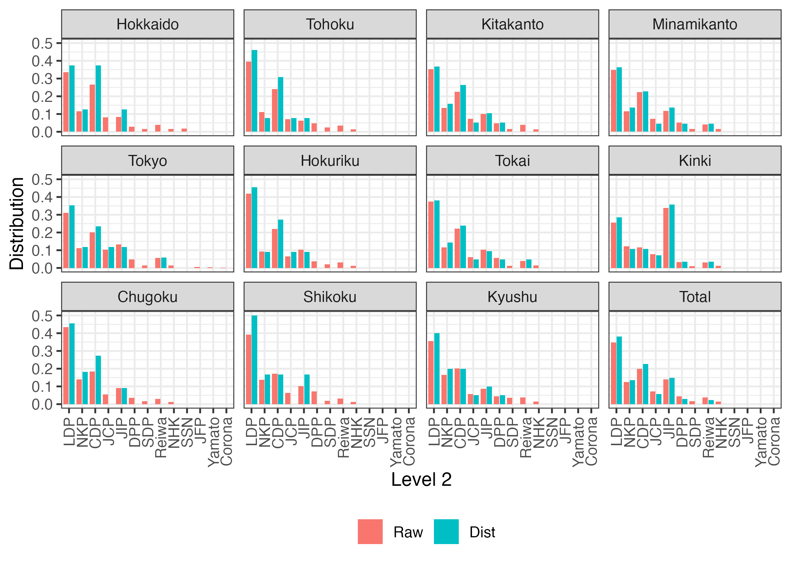
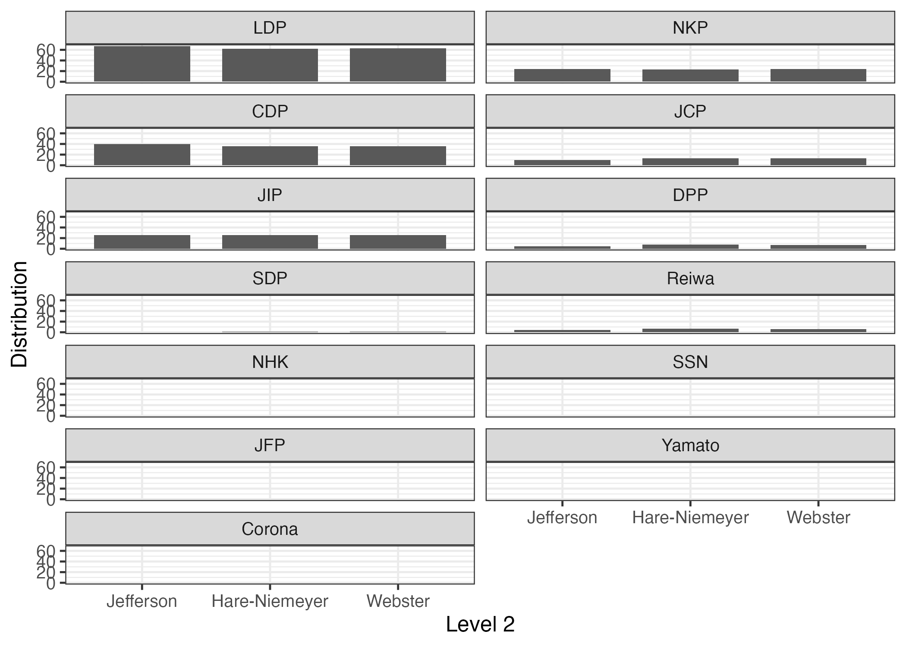

library(PRcalc)
library(tidyverse)Seat allocation
Import sample dataset
The first column contains the names of political parties, and the subsequent columns contain the respective number of votes for each party.
# Korean general election in 2016
# See "str(kr_lower_2016_en)", for the full names of parties
# Number of blocks = 1 (national block)
data("kr_lower_2016_en")
kr_lower_2016_en Party Vote
1 LKP 7960272
2 DPK 6069744
3 PP 6355572
4 JP 1719891
5 CLP 626853
6 MP 209872
7 GPK 182301
8 PUP 145624
9 CDP 129978# Japanese lower house election in 2019 (in English)
# See "str(jp_lower_2021_en)", for the full names of parties
# Number of blocks = 11 (regional blocks)
data("jp_lower_2021_en")
jp_lower_2021_en Party Hokkaido Tohoku Kitakanto Minamikanto Tokyo Hokuriku Tokai
1 LDP 863300 1628233 2172065 2590787 2000084 1468380 2515841
2 NKP 294371 456287 823930 850667 715450 322535 784976
3 CDP 682913 991505 1391149 1651562 1293281 773076 1485947
4 JCP 207189 292830 444115 534493 670340 225551 408606
5 JIP 215344 258690 617531 863897 858577 361476 694630
6 DPP 73621 195754 298056 384482 306180 133600 382734
7 SDP 41248 101442 97963 124447 92995 71185 84220
8 Reiwa 102086 143265 239592 302675 360387 111281 273208
9 NHK 42916 52664 87702 111298 92353 43529 98238
10 SSN 46142 0 0 0 0 0 0
11 JFP 0 0 0 0 33661 0 0
12 Yamato 0 0 0 0 16970 0 0
13 Corona 0 0 0 0 6620 0 0
Kinki Chugoku Shikoku Kyushu
1 2407699 1352723 664805 2250966
2 1155683 436220 233407 1040756
3 1090666 573324 291871 1266801
4 736156 173117 108021 365658
5 3180219 286302 173826 540338
6 303480 113899 122082 279509
7 100980 52638 30249 221221
8 292483 94446 52941 243284
9 111539 36758 21285 98506
10 0 0 0 0
11 0 0 0 0
12 0 0 0 0
13 0 0 0 0Calculation
To calculate seat allocation using the prcalc() function, you need to specify the following: data (x), electoral magnitude (m), and allocation method (method). Below is an example of allocating 47 (m = 47) seats using the Hare-Niemeyer method (method = "hn") with the kr_lower_2016 dataset. In this case, the length of m is 1 because number of blocks is 1. Furthermore, by adjusting the threshold argument, it is possible to exclude parties with votes below a certain threshold from seat allocation. The follow is an example of threshold is 3% (0.03). Default is threshold = 0.
# Example of national block (D'Hondt/Jefferson method)
obj1 <- prcalc(kr_lower_2016_en, m = 47, method = "hn", threshold = 0.03)
obj1Raw:
Party Vote
1 LKP 7960272
2 DPK 6069744
3 PP 6355572
4 JP 1719891
5 CLP 626853
6 MP 209872
7 GPK 182301
8 PUP 145624
9 CDP 129978
Result:
Party Vote
1 LKP 17
2 DPK 13
3 PP 13
4 JP 4
5 CLP 0
6 MP 0
7 GPK 0
8 PUP 0
9 CDP 0
Parameters:
Allocation method: Hare-Niemeyer quota
Extra parameter:
Threshold: 0.03
Magnitude: 47In a block system, you need to specify m for each block separately. Since jp_lower_2021 has 11 blocks, the length of m also needs to be 11.
# Example of regional block (D'Hondt/Jefferson method; 11 blocks)
obj2 <- prcalc(jp_lower_2021_en,
m = c(8, 13, 19, 22, 17, 11, 21, 28, 11, 6, 20),
method = "dt")
obj2Raw:
Party Hokkaido Tohoku Kitakanto Minamikanto Tokyo Hokuriku Tokai
1 LDP 863300 1628233 2172065 2590787 2000084 1468380 2515841
2 NKP 294371 456287 823930 850667 715450 322535 784976
3 CDP 682913 991505 1391149 1651562 1293281 773076 1485947
4 JCP 207189 292830 444115 534493 670340 225551 408606
5 JIP 215344 258690 617531 863897 858577 361476 694630
6 DPP 73621 195754 298056 384482 306180 133600 382734
7 SDP 41248 101442 97963 124447 92995 71185 84220
8 Reiwa 102086 143265 239592 302675 360387 111281 273208
9 NHK 42916 52664 87702 111298 92353 43529 98238
10 SSN 46142 0 0 0 0 0 0
11 JFP 0 0 0 0 33661 0 0
12 Yamato 0 0 0 0 16970 0 0
13 Corona 0 0 0 0 6620 0 0
Kinki Chugoku Shikoku Kyushu Total
1 2407699 1352723 664805 2250966 19914883
2 1155683 436220 233407 1040756 7114282
3 1090666 573324 291871 1266801 11492095
4 736156 173117 108021 365658 4166076
5 3180219 286302 173826 540338 8050830
6 303480 113899 122082 279509 2593397
7 100980 52638 30249 221221 1018588
8 292483 94446 52941 243284 2215648
9 111539 36758 21285 98506 796788
10 0 0 0 0 46142
11 0 0 0 0 33661
12 0 0 0 0 16970
13 0 0 0 0 6620
Result:
Party Hokkaido Tohoku Kitakanto Minamikanto Tokyo Hokuriku Tokai Kinki
1 LDP 3 6 7 8 6 5 8 8
2 NKP 1 1 3 3 2 1 3 3
3 CDP 3 4 5 5 4 3 5 3
4 JCP 0 1 1 1 2 1 1 2
5 JIP 1 1 2 3 2 1 2 10
6 DPP 0 0 1 1 0 0 1 1
7 SDP 0 0 0 0 0 0 0 0
8 Reiwa 0 0 0 1 1 0 1 1
9 NHK 0 0 0 0 0 0 0 0
10 SSN 0 0 0 0 0 0 0 0
11 JFP 0 0 0 0 0 0 0 0
12 Yamato 0 0 0 0 0 0 0 0
13 Corona 0 0 0 0 0 0 0 0
Chugoku Shikoku Kyushu Total
1 5 3 8 67
2 2 1 4 24
3 3 1 4 40
4 0 0 1 10
5 1 1 2 26
6 0 0 1 5
7 0 0 0 0
8 0 0 0 4
9 0 0 0 0
10 0 0 0 0
11 0 0 0 0
12 0 0 0 0
13 0 0 0 0
Parameters:
Allocation method: D'Hondt (Jefferson) method
Extra parameter:
Threshold: 0
Magnitude:
Hokkaido Tohoku Kitakanto Minamikanto Tokyo Hokuriku
8 13 19 22 17 11
Tokai Kinki Chugoku Shikoku Kyushu
21 28 11 6 20 {PRcalc} offers various allocation methods. Below is an example similar to the previous one, but with the allocation methods changed to the Hare-Niemeyer ("hn") method and the Sainte-Laguë method ("sl").
# Hare-Niemeyer method
obj3 <- prcalc(jp_lower_2021_en,
m = c(8, 13, 19, 22, 17, 11, 21, 28, 11, 6, 20),
method = "hn")
obj3Raw:
Party Hokkaido Tohoku Kitakanto Minamikanto Tokyo Hokuriku Tokai
1 LDP 863300 1628233 2172065 2590787 2000084 1468380 2515841
2 NKP 294371 456287 823930 850667 715450 322535 784976
3 CDP 682913 991505 1391149 1651562 1293281 773076 1485947
4 JCP 207189 292830 444115 534493 670340 225551 408606
5 JIP 215344 258690 617531 863897 858577 361476 694630
6 DPP 73621 195754 298056 384482 306180 133600 382734
7 SDP 41248 101442 97963 124447 92995 71185 84220
8 Reiwa 102086 143265 239592 302675 360387 111281 273208
9 NHK 42916 52664 87702 111298 92353 43529 98238
10 SSN 46142 0 0 0 0 0 0
11 JFP 0 0 0 0 33661 0 0
12 Yamato 0 0 0 0 16970 0 0
13 Corona 0 0 0 0 6620 0 0
Kinki Chugoku Shikoku Kyushu Total
1 2407699 1352723 664805 2250966 19914883
2 1155683 436220 233407 1040756 7114282
3 1090666 573324 291871 1266801 11492095
4 736156 173117 108021 365658 4166076
5 3180219 286302 173826 540338 8050830
6 303480 113899 122082 279509 2593397
7 100980 52638 30249 221221 1018588
8 292483 94446 52941 243284 2215648
9 111539 36758 21285 98506 796788
10 0 0 0 0 46142
11 0 0 0 0 33661
12 0 0 0 0 16970
13 0 0 0 0 6620
Result:
Party Hokkaido Tohoku Kitakanto Minamikanto Tokyo Hokuriku Tokai Kinki
1 LDP 3 5 7 8 5 5 8 7
2 NKP 1 1 3 2 2 1 3 4
3 CDP 2 3 4 5 4 3 5 3
4 JCP 1 1 1 2 2 1 1 2
5 JIP 1 1 2 3 2 1 2 10
6 DPP 0 1 1 1 1 0 1 1
7 SDP 0 0 0 0 0 0 0 0
8 Reiwa 0 1 1 1 1 0 1 1
9 NHK 0 0 0 0 0 0 0 0
10 SSN 0 0 0 0 0 0 0 0
11 JFP 0 0 0 0 0 0 0 0
12 Yamato 0 0 0 0 0 0 0 0
13 Corona 0 0 0 0 0 0 0 0
Chugoku Shikoku Kyushu Total
1 5 2 7 62
2 2 1 3 23
3 2 1 4 36
4 1 0 1 13
5 1 1 2 26
6 0 1 1 8
7 0 0 1 1
8 0 0 1 7
9 0 0 0 0
10 0 0 0 0
11 0 0 0 0
12 0 0 0 0
13 0 0 0 0
Parameters:
Allocation method: Hare-Niemeyer quota
Extra parameter:
Threshold: 0
Magnitude:
Hokkaido Tohoku Kitakanto Minamikanto Tokyo Hokuriku
8 13 19 22 17 11
Tokai Kinki Chugoku Shikoku Kyushu
21 28 11 6 20 # Sainte-Laguë/Webster method
obj4 <- prcalc(jp_lower_2021_en,
m = c(8, 13, 19, 22, 17, 11, 21, 28, 11, 6, 20),
method = "sl")
obj4Raw:
Party Hokkaido Tohoku Kitakanto Minamikanto Tokyo Hokuriku Tokai
1 LDP 863300 1628233 2172065 2590787 2000084 1468380 2515841
2 NKP 294371 456287 823930 850667 715450 322535 784976
3 CDP 682913 991505 1391149 1651562 1293281 773076 1485947
4 JCP 207189 292830 444115 534493 670340 225551 408606
5 JIP 215344 258690 617531 863897 858577 361476 694630
6 DPP 73621 195754 298056 384482 306180 133600 382734
7 SDP 41248 101442 97963 124447 92995 71185 84220
8 Reiwa 102086 143265 239592 302675 360387 111281 273208
9 NHK 42916 52664 87702 111298 92353 43529 98238
10 SSN 46142 0 0 0 0 0 0
11 JFP 0 0 0 0 33661 0 0
12 Yamato 0 0 0 0 16970 0 0
13 Corona 0 0 0 0 6620 0 0
Kinki Chugoku Shikoku Kyushu Total
1 2407699 1352723 664805 2250966 19914883
2 1155683 436220 233407 1040756 7114282
3 1090666 573324 291871 1266801 11492095
4 736156 173117 108021 365658 4166076
5 3180219 286302 173826 540338 8050830
6 303480 113899 122082 279509 2593397
7 100980 52638 30249 221221 1018588
8 292483 94446 52941 243284 2215648
9 111539 36758 21285 98506 796788
10 0 0 0 0 46142
11 0 0 0 0 33661
12 0 0 0 0 16970
13 0 0 0 0 6620
Result:
Party Hokkaido Tohoku Kitakanto Minamikanto Tokyo Hokuriku Tokai Kinki
1 LDP 3 5 7 8 5 5 8 7
2 NKP 1 2 3 2 2 1 3 4
3 CDP 2 3 4 5 4 3 5 3
4 JCP 1 1 1 2 2 1 1 2
5 JIP 1 1 2 3 2 1 2 10
6 DPP 0 1 1 1 1 0 1 1
7 SDP 0 0 0 0 0 0 0 0
8 Reiwa 0 0 1 1 1 0 1 1
9 NHK 0 0 0 0 0 0 0 0
10 SSN 0 0 0 0 0 0 0 0
11 JFP 0 0 0 0 0 0 0 0
12 Yamato 0 0 0 0 0 0 0 0
13 Corona 0 0 0 0 0 0 0 0
Chugoku Shikoku Kyushu Total
1 5 3 7 63
2 2 1 3 24
3 2 1 4 36
4 1 0 1 13
5 1 1 2 26
6 0 0 1 7
7 0 0 1 1
8 0 0 1 6
9 0 0 0 0
10 0 0 0 0
11 0 0 0 0
12 0 0 0 0
13 0 0 0 0
Parameters:
Allocation method: Sainte-Laguë (Webster) method
Extra parameter:
Threshold: 0
Magnitude:
Hokkaido Tohoku Kitakanto Minamikanto Tokyo Hokuriku
8 13 19 22 17 11
Tokai Kinki Chugoku Shikoku Kyushu
21 28 11 6 20 Please click here for the list of various allocation methods provided by {PRcalc} and these abbreviations.
Printing
print() and summary() functions are a method of prcalc object. You can hide a column of “Total” with show_total = FALSE.
print(obj2, show_total = FALSE) # Hide `Total` columnRaw:
Party Hokkaido Tohoku Kitakanto Minamikanto Tokyo Hokuriku Tokai
1 LDP 863300 1628233 2172065 2590787 2000084 1468380 2515841
2 NKP 294371 456287 823930 850667 715450 322535 784976
3 CDP 682913 991505 1391149 1651562 1293281 773076 1485947
4 JCP 207189 292830 444115 534493 670340 225551 408606
5 JIP 215344 258690 617531 863897 858577 361476 694630
6 DPP 73621 195754 298056 384482 306180 133600 382734
7 SDP 41248 101442 97963 124447 92995 71185 84220
8 Reiwa 102086 143265 239592 302675 360387 111281 273208
9 NHK 42916 52664 87702 111298 92353 43529 98238
10 SSN 46142 0 0 0 0 0 0
11 JFP 0 0 0 0 33661 0 0
12 Yamato 0 0 0 0 16970 0 0
13 Corona 0 0 0 0 6620 0 0
Kinki Chugoku Shikoku Kyushu
1 2407699 1352723 664805 2250966
2 1155683 436220 233407 1040756
3 1090666 573324 291871 1266801
4 736156 173117 108021 365658
5 3180219 286302 173826 540338
6 303480 113899 122082 279509
7 100980 52638 30249 221221
8 292483 94446 52941 243284
9 111539 36758 21285 98506
10 0 0 0 0
11 0 0 0 0
12 0 0 0 0
13 0 0 0 0
Result:
Party Hokkaido Tohoku Kitakanto Minamikanto Tokyo Hokuriku Tokai Kinki
1 LDP 3 6 7 8 6 5 8 8
2 NKP 1 1 3 3 2 1 3 3
3 CDP 3 4 5 5 4 3 5 3
4 JCP 0 1 1 1 2 1 1 2
5 JIP 1 1 2 3 2 1 2 10
6 DPP 0 0 1 1 0 0 1 1
7 SDP 0 0 0 0 0 0 0 0
8 Reiwa 0 0 0 1 1 0 1 1
9 NHK 0 0 0 0 0 0 0 0
10 SSN 0 0 0 0 0 0 0 0
11 JFP 0 0 0 0 0 0 0 0
12 Yamato 0 0 0 0 0 0 0 0
13 Corona 0 0 0 0 0 0 0 0
Chugoku Shikoku Kyushu
1 5 3 8
2 2 1 4
3 3 1 4
4 0 0 1
5 1 1 2
6 0 0 1
7 0 0 0
8 0 0 0
9 0 0 0
10 0 0 0
11 0 0 0
12 0 0 0
13 0 0 0
Parameters:
Allocation method: D'Hondt (Jefferson) method
Extra parameter:
Threshold: 0
Magnitude:
Hokkaido Tohoku Kitakanto Minamikanto Tokyo Hokuriku
8 13 19 22 17 11
Tokai Kinki Chugoku Shikoku Kyushu
21 28 11 6 20 In some cases, result is too long. You can adjust length of result using head argument. If head = 10, only ten rows are displayed. Default is head = Inf. (entire rows)
print(obj2, head = 10) # Show only ten rows.Raw:
Party Hokkaido Tohoku Kitakanto Minamikanto Tokyo Hokuriku Tokai
1 LDP 863300 1628233 2172065 2590787 2000084 1468380 2515841
2 NKP 294371 456287 823930 850667 715450 322535 784976
3 CDP 682913 991505 1391149 1651562 1293281 773076 1485947
4 JCP 207189 292830 444115 534493 670340 225551 408606
5 JIP 215344 258690 617531 863897 858577 361476 694630
6 DPP 73621 195754 298056 384482 306180 133600 382734
7 SDP 41248 101442 97963 124447 92995 71185 84220
8 Reiwa 102086 143265 239592 302675 360387 111281 273208
9 NHK 42916 52664 87702 111298 92353 43529 98238
10 SSN 46142 0 0 0 0 0 0
Kinki Chugoku Shikoku Kyushu Total
1 2407699 1352723 664805 2250966 19914883
2 1155683 436220 233407 1040756 7114282
3 1090666 573324 291871 1266801 11492095
4 736156 173117 108021 365658 4166076
5 3180219 286302 173826 540338 8050830
6 303480 113899 122082 279509 2593397
7 100980 52638 30249 221221 1018588
8 292483 94446 52941 243284 2215648
9 111539 36758 21285 98506 796788
10 0 0 0 0 46142
Result:
Party Hokkaido Tohoku Kitakanto Minamikanto Tokyo Hokuriku Tokai Kinki
1 LDP 3 6 7 8 6 5 8 8
2 NKP 1 1 3 3 2 1 3 3
3 CDP 3 4 5 5 4 3 5 3
4 JCP 0 1 1 1 2 1 1 2
5 JIP 1 1 2 3 2 1 2 10
6 DPP 0 0 1 1 0 0 1 1
7 SDP 0 0 0 0 0 0 0 0
8 Reiwa 0 0 0 1 1 0 1 1
9 NHK 0 0 0 0 0 0 0 0
10 SSN 0 0 0 0 0 0 0 0
Chugoku Shikoku Kyushu Total
1 5 3 8 67
2 2 1 4 24
3 3 1 4 40
4 0 0 1 10
5 1 1 2 26
6 0 0 1 5
7 0 0 0 0
8 0 0 0 4
9 0 0 0 0
10 0 0 0 0
Parameters:
Allocation method: D'Hondt (Jefferson) method
Extra parameter:
Threshold: 0
Magnitude:
Hokkaido Tohoku Kitakanto Minamikanto Tokyo Hokuriku
8 13 19 22 17 11
Tokai Kinki Chugoku Shikoku Kyushu
21 28 11 6 20 In default, numbers of votes and seats are displayed. If you switch to proportion using prop = TRUE.
print(obj2, head = 5, prop = TRUE)Raw:
Party Hokkaido Tohoku Kitakanto Minamikanto Tokyo Hokuriku
1 LDP 0.33602815 0.39513793 0.35191652 0.3494307 0.3102397 0.41826883
2 NKP 0.11458003 0.11073126 0.13349259 0.1147332 0.1109759 0.09187427
3 CDP 0.26581489 0.24061742 0.22539303 0.2227534 0.2006052 0.22021111
4 JCP 0.08064559 0.07106369 0.07195522 0.0720894 0.1039787 0.06424832
5 JIP 0.08381981 0.06277863 0.10005196 0.1165175 0.1331768 0.10296663
Tokai Kinki Chugoku Shikoku Kyushu Total
1 0.37391371 0.25671430 0.43364470 0.39141012 0.35689743 0.34655083
2 0.11666607 0.12322153 0.13983978 0.13742054 0.16501499 0.12379989
3 0.22084701 0.11628927 0.18379145 0.17184176 0.20085511 0.19998084
4 0.06072855 0.07849061 0.05549641 0.06359837 0.05797618 0.07249639
5 0.10323851 0.33908212 0.09178032 0.10234167 0.08567221 0.14009732
Result:
Party Hokkaido Tohoku Kitakanto Minamikanto Tokyo Hokuriku
1 LDP 0.375 0.46153846 0.36842105 0.36363636 0.3529412 0.45454545
2 NKP 0.125 0.07692308 0.15789474 0.13636364 0.1176471 0.09090909
3 CDP 0.375 0.30769231 0.26315789 0.22727273 0.2352941 0.27272727
4 JCP 0.000 0.07692308 0.05263158 0.04545455 0.1176471 0.09090909
5 JIP 0.125 0.07692308 0.10526316 0.13636364 0.1176471 0.09090909
Tokai Kinki Chugoku Shikoku Kyushu Total
1 0.38095238 0.28571429 0.45454545 0.5000000 0.40 0.38068182
2 0.14285714 0.10714286 0.18181818 0.1666667 0.20 0.13636364
3 0.23809524 0.10714286 0.27272727 0.1666667 0.20 0.22727273
4 0.04761905 0.07142857 0.00000000 0.0000000 0.05 0.05681818
5 0.09523810 0.35714286 0.09090909 0.1666667 0.10 0.14772727
Parameters:
Allocation method: D'Hondt (Jefferson) method
Extra parameter:
Threshold: 0
Magnitude:
Hokkaido Tohoku Kitakanto Minamikanto Tokyo Hokuriku
8 13 19 22 17 11
Tokai Kinki Chugoku Shikoku Kyushu
21 28 11 6 20 If use_gt = TRUE, a result rendered using {gt} package. Furthermore, the digits argument allows specifying the number of decimal places for the output. Default is digits = 3. In {gt} mode, district magnitudes are not displayed.
print(obj2, prop = TRUE, use_gt = TRUE, digits = 3)| Party | Hokkaido | Tohoku | Kitakanto | Minamikanto | Tokyo | Hokuriku | Tokai | Kinki | Chugoku | Shikoku | Kyushu | Total |
|---|---|---|---|---|---|---|---|---|---|---|---|---|
| Raw | ||||||||||||
| LDP | 0.336 | 0.395 | 0.352 | 0.349 | 0.310 | 0.418 | 0.374 | 0.257 | 0.434 | 0.391 | 0.357 | 0.347 |
| NKP | 0.115 | 0.111 | 0.133 | 0.115 | 0.111 | 0.092 | 0.117 | 0.123 | 0.140 | 0.137 | 0.165 | 0.124 |
| CDP | 0.266 | 0.241 | 0.225 | 0.223 | 0.201 | 0.220 | 0.221 | 0.116 | 0.184 | 0.172 | 0.201 | 0.200 |
| JCP | 0.081 | 0.071 | 0.072 | 0.072 | 0.104 | 0.064 | 0.061 | 0.078 | 0.055 | 0.064 | 0.058 | 0.072 |
| JIP | 0.084 | 0.063 | 0.100 | 0.117 | 0.133 | 0.103 | 0.103 | 0.339 | 0.092 | 0.102 | 0.086 | 0.140 |
| DPP | 0.029 | 0.048 | 0.048 | 0.052 | 0.047 | 0.038 | 0.057 | 0.032 | 0.037 | 0.072 | 0.044 | 0.045 |
| SDP | 0.016 | 0.025 | 0.016 | 0.017 | 0.014 | 0.020 | 0.013 | 0.011 | 0.017 | 0.018 | 0.035 | 0.018 |
| Reiwa | 0.040 | 0.035 | 0.039 | 0.041 | 0.056 | 0.032 | 0.041 | 0.031 | 0.030 | 0.031 | 0.039 | 0.039 |
| NHK | 0.017 | 0.013 | 0.014 | 0.015 | 0.014 | 0.012 | 0.015 | 0.012 | 0.012 | 0.013 | 0.016 | 0.014 |
| SSN | 0.018 | 0.000 | 0.000 | 0.000 | 0.000 | 0.000 | 0.000 | 0.000 | 0.000 | 0.000 | 0.000 | 0.001 |
| JFP | 0.000 | 0.000 | 0.000 | 0.000 | 0.005 | 0.000 | 0.000 | 0.000 | 0.000 | 0.000 | 0.000 | 0.001 |
| Yamato | 0.000 | 0.000 | 0.000 | 0.000 | 0.003 | 0.000 | 0.000 | 0.000 | 0.000 | 0.000 | 0.000 | 0.000 |
| Corona | 0.000 | 0.000 | 0.000 | 0.000 | 0.001 | 0.000 | 0.000 | 0.000 | 0.000 | 0.000 | 0.000 | 0.000 |
| Distribution | ||||||||||||
| LDP | 0.375 | 0.462 | 0.368 | 0.364 | 0.353 | 0.455 | 0.381 | 0.286 | 0.455 | 0.500 | 0.400 | 0.381 |
| NKP | 0.125 | 0.077 | 0.158 | 0.136 | 0.118 | 0.091 | 0.143 | 0.107 | 0.182 | 0.167 | 0.200 | 0.136 |
| CDP | 0.375 | 0.308 | 0.263 | 0.227 | 0.235 | 0.273 | 0.238 | 0.107 | 0.273 | 0.167 | 0.200 | 0.227 |
| JCP | 0.000 | 0.077 | 0.053 | 0.045 | 0.118 | 0.091 | 0.048 | 0.071 | 0.000 | 0.000 | 0.050 | 0.057 |
| JIP | 0.125 | 0.077 | 0.105 | 0.136 | 0.118 | 0.091 | 0.095 | 0.357 | 0.091 | 0.167 | 0.100 | 0.148 |
| DPP | 0.000 | 0.000 | 0.053 | 0.045 | 0.000 | 0.000 | 0.048 | 0.036 | 0.000 | 0.000 | 0.050 | 0.028 |
| SDP | 0.000 | 0.000 | 0.000 | 0.000 | 0.000 | 0.000 | 0.000 | 0.000 | 0.000 | 0.000 | 0.000 | 0.000 |
| Reiwa | 0.000 | 0.000 | 0.000 | 0.045 | 0.059 | 0.000 | 0.048 | 0.036 | 0.000 | 0.000 | 0.000 | 0.023 |
| NHK | 0.000 | 0.000 | 0.000 | 0.000 | 0.000 | 0.000 | 0.000 | 0.000 | 0.000 | 0.000 | 0.000 | 0.000 |
| SSN | 0.000 | 0.000 | 0.000 | 0.000 | 0.000 | 0.000 | 0.000 | 0.000 | 0.000 | 0.000 | 0.000 | 0.000 |
| JFP | 0.000 | 0.000 | 0.000 | 0.000 | 0.000 | 0.000 | 0.000 | 0.000 | 0.000 | 0.000 | 0.000 | 0.000 |
| Yamato | 0.000 | 0.000 | 0.000 | 0.000 | 0.000 | 0.000 | 0.000 | 0.000 | 0.000 | 0.000 | 0.000 | 0.000 |
| Corona | 0.000 | 0.000 | 0.000 | 0.000 | 0.000 | 0.000 | 0.000 | 0.000 | 0.000 | 0.000 | 0.000 | 0.000 |
| Allocation method: D'Hondt (Jefferson) method | ||||||||||||
| Extra parameter: | ||||||||||||
| Threshold: 0 | ||||||||||||
summary() function is a useful when number of blocks is large. summary() function displays only the total column.
summary(obj2) # summarize Party Raw Dist
1 LDP 19914883 67
2 NKP 7114282 24
3 CDP 11492095 40
4 JCP 4166076 10
5 JIP 8050830 26
6 DPP 2593397 5
7 SDP 1018588 0
8 Reiwa 2215648 4
9 NHK 796788 0
10 SSN 46142 0
11 JFP 33661 0
12 Yamato 16970 0
13 Corona 6620 0prop argument is also allowed in summary() function.
summary(obj2, prop = TRUE) # summarize with proportion Party Raw Dist
1 LDP 0.346551 0.3807
2 NKP 0.123800 0.1364
3 CDP 0.199981 0.2273
4 JCP 0.072496 0.0568
5 JIP 0.140097 0.1477
6 DPP 0.045129 0.0284
7 SDP 0.017725 0.0000
8 Reiwa 0.038556 0.0227
9 NHK 0.013865 0.0000
10 SSN 0.000803 0.0000
11 JFP 0.000586 0.0000
12 Yamato 0.000295 0.0000
13 Corona 0.000115 0.0000Visualization
{PRcalc} provides plot() method for prcalc object.
plot(obj1)If the number of blocks is two or more, each block is divided into facets.
plot(obj2)
The angle argument allows rotation of the x-axis scale label; the value of angle must be between 0 and 90.
plot(obj2, angle = 90)
Only some parties can be displayed with the subset_p argument.
# Output only some parties
plot(obj2,
subset_p = c("LDP", "NKP", "CDP", "JIP", "JCP", "DPP"))It is also possible to display only some blocks by using the subset_b argument.
# Output only some district
plot(obj2,
subset_p = c("LDP", "NKP", "CDP", "JIP", "JCP", "DPP"),
subset_b = c("Tokyo", "Kinki")) If by = "party", the facet is divided based on party. Default is by = "block".
# Divide the facet by parties
plot(obj2,
subset_p = c("LDP", "NKP", "CDP", "JIP", "JCP", "DPP"),
subset_b = c("Tokyo", "Kinki"),
by = "party")The number of facet columns can be adjusted with facet_col.
# Three columns
plot(obj2,
subset_p = c("LDP", "NKP", "CDP", "JIP", "JCP", "DPP"),
subset_b = c("Tokyo", "Kinki"),
by = "party",
facet_col = 3)By default, all facets share the same y-axis scale. If you want to use a different scale, set free_y to TRUE.
# Use different y-axis scales for each facet
plot(obj2,
subset_p = c("LDP", "NKP", "CDP", "JIP", "JCP", "DPP"),
subset_b = c("Tokyo", "Kinki"),
by = "party",
facet_col = 3,
free_y = TRUE)Comparison
You can compare multiple prcalc ojbects using compare() function. prcalc objects must be grouped in a list structure using list() function.
compare(list(obj2, obj3, obj4)) Party Model1 Model2 Model3
1 LDP 67 62 63
2 NKP 24 23 24
3 CDP 40 36 36
4 JCP 10 13 13
5 JIP 26 26 26
6 DPP 5 8 7
7 SDP 0 1 1
8 Reiwa 4 7 6
9 NHK 0 0 0
10 SSN 0 0 0
11 JFP 0 0 0
12 Yamato 0 0 0
13 Corona 0 0 0A named list structure is also available.
list("Jefferson" = obj2,
"Hare-Niemeyer" = obj3,
"Webster" = obj4) |>
compare() Party Jefferson Hare-Niemeyer Webster
1 LDP 67 62 63
2 NKP 24 23 24
3 CDP 40 36 36
4 JCP 10 13 13
5 JIP 26 26 26
6 DPP 5 8 7
7 SDP 0 1 1
8 Reiwa 4 7 6
9 NHK 0 0 0
10 SSN 0 0 0
11 JFP 0 0 0
12 Yamato 0 0 0
13 Corona 0 0 0By using print() function with subset parameter, you can extract subset of the parties.
list("Jefferson" = obj2,
"Hare-Niemeyer" = obj3,
"Webster" = obj4) |>
compare() |>
print(subset = c("LDP", "NKP", "CDP", "JIP", "JCP", "DPP")) Party Jefferson Hare-Niemeyer Webster
1 LDP 67 62 63
2 NKP 24 23 24
3 CDP 40 36 36
4 JCP 10 13 13
5 JIP 26 26 26
6 DPP 5 8 7If prop = TRUE, the proportion is displayed. It is also available to output tables in HTML format using use_gt = TRUE.
list("Jefferson" = obj2,
"Hare-Niemeyer" = obj3,
"Webster" = obj4) |>
compare() |>
print(prop = TRUE, use_gt = TRUE)| Party | Jefferson | Hare-Niemeyer | Webster |
|---|---|---|---|
| LDP | 0.381 | 0.352 | 0.358 |
| NKP | 0.136 | 0.131 | 0.136 |
| CDP | 0.227 | 0.205 | 0.205 |
| JCP | 0.057 | 0.074 | 0.074 |
| JIP | 0.148 | 0.148 | 0.148 |
| DPP | 0.028 | 0.045 | 0.040 |
| SDP | 0.000 | 0.006 | 0.006 |
| Reiwa | 0.023 | 0.040 | 0.034 |
| NHK | 0.000 | 0.000 | 0.000 |
| SSN | 0.000 | 0.000 | 0.000 |
| JFP | 0.000 | 0.000 | 0.000 |
| Yamato | 0.000 | 0.000 | 0.000 |
| Corona | 0.000 | 0.000 | 0.000 |
Visualization
plot() function is a method of prcalc_compare class. Its return value is ggplot object.
list("Jefferson" = obj2,
"Hare-Niemeyer" = obj3,
"Webster" = obj4) |>
compare() |>
plot()If facet = TRUE, the plot is separated by parties.
list("Jefferson" = obj2,
"Hare-Niemeyer" = obj3,
"Webster" = obj4) |>
compare() |>
plot(facet = TRUE)If facet = TRUE, you can adjust number of columns and y-axis scale using facet_col and free_y parameters, respectively.
list("Jefferson" = obj2,
"Hare-Niemeyer" = obj3,
"Webster" = obj4) |>
compare() |>
plot(subset_p = c("LDP", "NKP", "CDP", "JCP", "JIP",
"DPP", "SDP", "Reiwa"),
facet = TRUE, facet_col = 2, free_y = FALSE)
Customized allocation methods
Although {PRcalc} offers various allocation methods, it may not enough for your needs. In this case you can use fully customizable divisor ("cd"), quota ("cq"), and \(\alpha\)-divergence ("ad").
Custom divisor
For highest averages methods, the number of votes received by each party is divided by the denominator of the determined rule, \(r(k)\). For example, \(k+1\)th divisor of D’Hondt (Jefferson) method is \(r(k) = k + 1\), such as \(1, 2, 3, \dots\). In this case, we can use method = "dt" and we can reproduce this with custom divisors, method = "cd".
The divisor is specified by the extra argument. Since the magnitude is 47 (m = 47), division is performed at most 47 times. Therefore, the length of extra must also be 47 or more. In this case, extra = 1:47.
custom1 <- prcalc(kr_lower_2016_en, m = 47, method = "dt", threshold = 0.03)
custom2 <- prcalc(kr_lower_2016_en, m = 47, method = "cd", threshold = 0.03,
extra = 1:47)
list("D'Hondt" = custom1, "Custom divisor" = custom2) |>
compare() |>
print(use_gt = TRUE)| Party | D'Hondt | Custom divisor |
|---|---|---|
| LKP | 17 | 17 |
| DPK | 13 | 13 |
| PP | 14 | 14 |
| JP | 3 | 3 |
| CLP | 0 | 0 |
| MP | 0 | 0 |
| GPK | 0 | 0 |
| PUP | 0 | 0 |
| CDP | 0 | 0 |
Let’s try a super weird divisor here. It shows the same divisor three times repeatedly before going to the next number. That is, the divisor is c(1, 1, 1, 1, 2, 2, 2, 3, 3, 3, ... , 16, 16, 16), a vector of length 48.
custom3 <- prcalc(kr_lower_2016_en, m = 47, method = "cd", threshold = 0.03,
extra = rep(1:16, each = 3))
list("D'Hondt" = custom1, "Weird divisor" = custom3) |>
compare() |>
print(use_gt = TRUE)| Party | D'Hondt | Weird divisor |
|---|---|---|
| LKP | 17 | 18 |
| DPK | 13 | 12 |
| PP | 14 | 14 |
| JP | 3 | 3 |
| CLP | 0 | 0 |
| MP | 0 | 0 |
| GPK | 0 | 0 |
| PUP | 0 | 0 |
| CDP | 0 | 0 |
If the number of blocks is greater than or equal to 2, the length of extra must be greater than or equal to the maximum value of vector m. For example, if the number of block is 3 and m = c(3, 7, 6), then the length of extra must be greater than or equal to 7.
Custom quota
For largest reminder methods, the first step is to compute quota. For Hare-Niemeyer method, quota is \(\frac{v}{m}\), which \(v\) is total votes and \(m\) is total seats. In 2016 Korean general election (kr_lower_2016_en), the total number of votes cast was 23400107 and the district magnitude was 47. Thus, Hare-Niemeyer quota is \(\frac{23400107}{47} \simeq 497874.6\). This custom quota must be specified with an extra argument.
custom4 <- prcalc(kr_lower_2016_en, m = 47, method = "hn")
custom5 <- prcalc(kr_lower_2016_en, m = 47, method = "cq", extra = 497874.6)
list("Hare" = custom4, "Custom quota" = custom5) |>
compare() |>
print(use_gt = TRUE)| Party | Hare | Custom quota |
|---|---|---|
| LKP | 16 | 16 |
| DPK | 12 | 12 |
| PP | 13 | 13 |
| JP | 4 | 4 |
| CLP | 1 | 1 |
| MP | 1 | 1 |
| GPK | 0 | 0 |
| PUP | 0 | 0 |
| CDP | 0 | 0 |
The length of extra must be 1 or equal to the number of blocks; if the length of extra is 1, the same quota is applied to all blocks.
custom6 <- prcalc(jp_lower_2021_en,
m = c(8, 13, 19, 22, 17, 11, 21, 28, 11, 6, 20),
method = "hare")
custom7 <- prcalc(jp_lower_2021_en,
m = c(8, 13, 19, 22, 17, 11, 21, 28, 11, 6, 20),
method = "cq",
extra = colSums(jp_lower_2021_en[, -1]) /
c(8, 13, 19, 22, 17, 11, 21, 28, 11, 6, 20))
list("Hare" = custom6, "Custom quota" = custom7) |>
compare() |>
print(use_gt = TRUE)| Party | Hare | Custom quota |
|---|---|---|
| LDP | 62 | 62 |
| NKP | 23 | 23 |
| CDP | 36 | 36 |
| JCP | 13 | 13 |
| JIP | 26 | 26 |
| DPP | 8 | 8 |
| SDP | 1 | 1 |
| Reiwa | 7 | 7 |
| NHK | 0 | 0 |
| SSN | 0 | 0 |
| JFP | 0 | 0 |
| Yamato | 0 | 0 |
| Corona | 0 | 0 |
\(\alpha\)-divergence
\(\alpha\)-divergence (method = "ad") is a highly flexible (not fully customizable) highest averages method. A divisor (\(r(k)\)) is calculated as follow:
\[ r(k) = \begin{cases} \frac{1}{e} \frac{(k + 1)^{k + 1}}{k^k}& \mbox{if}\quad\alpha = 1,\\ \frac{1}{\log{\frac{k + 1}{k}}} & \mbox{if}\quad\alpha = 0,\\ \Bigl(\frac{(k + 1)^\alpha - k^\alpha}{\alpha}\Bigr)^{\frac{1}{\alpha - 1}} & \mbox{otherwise.}\\ \end{cases} \]
For example, if \(\alpha = 2\), the divisor of \(\alpha\)-divergence is known to coincide with that of Sainte-Laguë (Webster). \(\alpha\) must be specified with an extra argument.
# Jefferson vs alpha = 10
list(prcalc(jp_upper_2019, m = 50, method = "sl"),
prcalc(jp_upper_2019, m = 50, method = "ad", extra = 2)) |>
compare() |>
print(use_gt = TRUE)| Party | Model1 | Model2 |
|---|---|---|
| 自民 | 18 | 18 |
| 公明 | 7 | 7 |
| 立憲 | 8 | 8 |
| 維新 | 5 | 5 |
| 共産 | 5 | 5 |
| 国民 | 3 | 3 |
| れいわ | 2 | 2 |
| 社民 | 1 | 1 |
| N国 | 1 | 1 |
| 安楽死 | 0 | 0 |
| 幸福 | 0 | 0 |
| オリーブ | 0 | 0 |
| 労働者 | 0 | 0 |